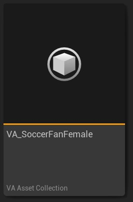
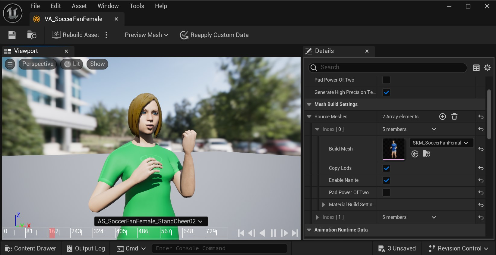

UVAAssetCollection
The VA Asset Collection is the core asset type in the Vertex Animation Toolset that manages and stores all data required for vertex animations. It serves as a container that holds meshes, animations, and their associated data.

For step-by-step instructions on creating a VA Asset Collection, see our Quick Start Guide. To understand how VA Asset Collections fit into the overall workflow, check out the Workflow Overview.
Overview
A VA Asset Collection contains:
- Source skeletal meshes and their build settings
- Built vertex animation meshes
- Animation data stored in textures
- Material configurations
- Per-mesh custom data
Components
Mesh Data
- Stores converted static meshes optimized for vertex animation
- Maintains UV channel information
- Contains bone data for skeletal mesh animations
- Tracks vertex counts and bounds
- Stores material configurations and overrides
Animation Data
- Position and rotation/normal texture data
- Animation frame data
- Animation bounds
- Frame rates and timing information
- Animation sequence metadata
Material Settings
- Source material references
- Material build configurations
- Material parameter mappings
- Custom material data per mesh
Editor Features
A custom editor window is available for working with VA Asset Collections. See the VA Asset Editor page for more information.

Technical Details
Storage Format
- Animations are stored as texture-based vertex data
- Positions and rotations/normals are split into separate textures
- Each mesh maintains its own vertex layout and UV configuration
- Build hashes track asset changes and dependencies
Performance Considerations
- Optimized for runtime texture sampling
- Efficient memory usage through texture-based storage
- Minimal runtime overhead
- Built data is preprocessed for optimal playback
See Also
- Quick Start Guide - How to create and configure VA Asset Collections
- VA Asset Editor - Edit existing VA Asset Collections
- Workflow Overview - Understand how VA Asset Collections fit into the overall process
- VA Animation Player - Control animations in your VA Asset Collection
- VA Mesh Component - Use VA Asset Collections with single characters
- VA Instanced Mesh Component - Use VA Asset Collections with multiple characters